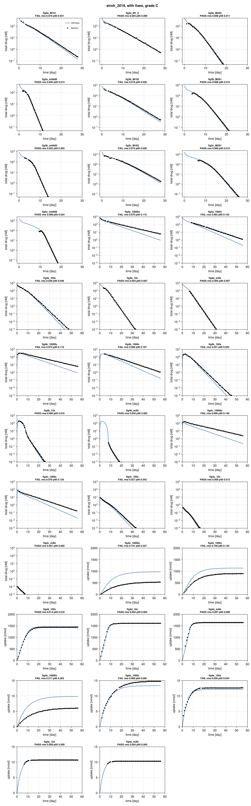
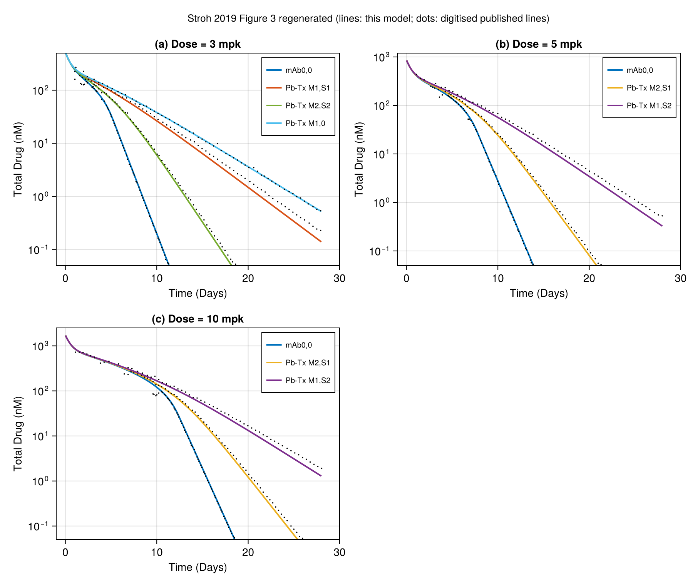
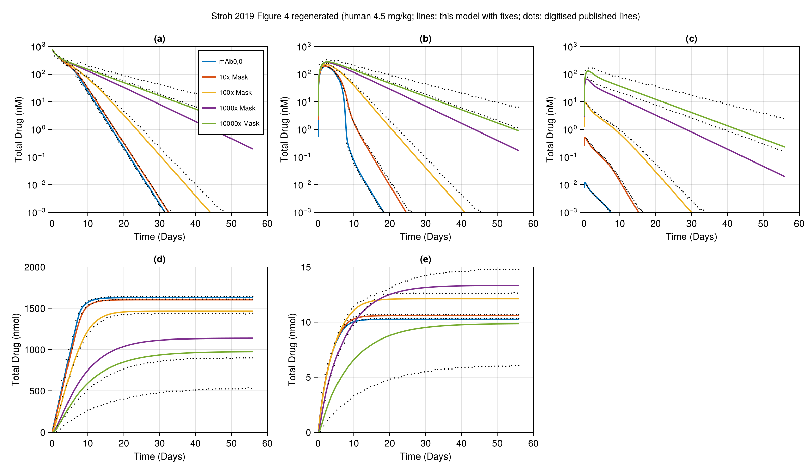

stroh_2019: grade C
Stroh M, Sagert J, Burke JM, Apgar JF, Lin L, Millard BL (printed "Miliard" in the supplement), Kavanaugh WM. Quantitative Systems Pharmacology Model of a Masked, Tumor-Activated Antibody. CPT Pharmacometrics Syst Pharmacol 2019;8(9):676-684. DOI 10.1002/psp4.12448, PMC6765697.
Grade C, one line: the model runs and was verified entry by entry against the supplement matrices, 7 of 10 monkey (Fig 3) lines pass, but only 14 of 35 targets pass as published (18 of 35 with the one readout fix, flagged circular). The human Fig 4 lines for the masked variants fail; Fig 4 used an unstated human kcleave (Table 2 gives only < 3e-7 1/s). The sensitivity scan shows about 1e-7 would match, but that value is not stated in the paper and choosing it by agreement would be tuning, so it is not used.
Model
Six molecular forms per compartment (arm states c = mask closed, o = mask open ("breathing"), m = mask cleaved off; intact cc, mono-cleaved cm/om, dual-cleaved mm = parental mAb), plus nine target-bound complexes, free target R, and terminal pools. Three compartments: plasma (central), periphery, tumour. States are concentrations in nM; rate constants stay in 1/s as printed and the ODE clock is days (factor 86400).
Per arm: c -> o at kopen, o -> c at kclose (Kmask = kclose/kopen), c, o, oR -> m, m, mR at kcleave (compartment specific); o or m + R -> oR or mR at kon1 (first arm) / kon2 (second arm); unbinding at koff1; complexes internalised at kendo into tmdd_o/tmdd_m pools; free R decays at kendo and is synthesised at ksynR/V; unbound forms eliminated at kel (plasma, periphery) and exchanged plasma-periphery (k12, k21) and plasma-tumour (k13, k31, amount based so that Ctumour/Cplasma -> p). Dose is an IV bolus into plasma (pb_c_c for Pb-Tx, pb_m_m for mAb0,0). Parameters: Table 1 (monkey), Table 2 (human), each commented in model.jl.
Structural verification. supplement_check/check_matrices.jl builds the first-order matrix A1 and second-order matrix A2 from the reaction list in model.jl with the supplement's own parameter list and compares with the transcribed supplement matrices: 234/234 A1 and 84/84 A2 entries identical. So the reaction network is the authors', including the quirk that the oRm complex is internalised into the `tmddo` pool.
Targets
Pre-declared in notes.md before any simulation was compared; frozen 2026-11-04 09:48 local. Grade-bearing: all model lines (solid, kind: curve) of Figure 3a-c (10 curves: monkey plasma total drug, log y) and Figure 4a-e (25 curves: human 4.5 mg/kg, plasma / periphery / tumour concentration, cumulative receptor-mediated uptake in periphery / tumour). Not graded: observed monkey points, Figure 5.
Digitised from PSP4-8-676-g003.jpg / g004.jpg (709 px wide) with reference/digitise_stroh.jl (settings in reference/digitise.toml, generated by make_toml.jl): MATLAB line colours identified by hue (the JPEGs are blurred; hollow observation circles share the line colours), runs followed from the right-most unique run leftwards with a continuity predictor and an outlier filter. Calibration from two tick marks per axis; 18 further ticks that were not used for calibration read back within 4 % of value on log axes (<= 0.5 % of the axis box). Overlay in figures/digitise_check.png (local only: it contains the paper's figure). Coverage: Fig 3 traces start where each line can be separated from the hollow markers and the other lines: day 1.05-1.15 for 3a M1S1/M2S2/M1,0 and 5/10 mg/kg M1,S2, day 1.67 (3a mAb), 2.7 (3b mAb), 3.6 (3b M2,S1), 6.5 (3c M2,S1) and 9.6 (3c mAb), and run to day 28 or the bottom edge, so the earliest distribution phase of the 3c lines is not graded; in Fig 4 the blue (mAb) and orange (10x) lines nearly overlap in panels a-c, so some are graded only over the traced span (e.g. 4a mAb 6.7-31 d). Axis limits: Fig 3 x -1..30, y 0.05..(500, 1200, 2500) for a, b, c (limit values measured from frames); Fig 4 x 0..60, y 1e-3..1e3 (a-c), 0..2000 (d), 0..15 (e). Tolerance: default (rms 0.015, p95 0.03 of the axis box), no per-curve overrides. Marker-contamination rule (added after review): the first version of the traces contained points contaminated by hollow-marker pixels (for example a negative-time point in fig3a_M1S1.csv). digitise.toml now carries min_x per curve: Figure 3 traces keep only t >= 1 day (markers are densest at t < 1 d), all curves keep only t >= 0. CSVs were regenerated after review (make_toml.jl, digitise_stroh.jl). No pass/fail changed: as published still 14/35, with fixes still 18/35; the Fig 3 rms values moved by at most 0.0007 (3a M1S1 0.0190 to 0.0193, still fail).
Result
Grade C (score.toml). As published 14/35 pass; with the fix 18/35.
| curve | as published rms | p95 | pass | with fix rms | p95 | pass |
|---|---|---|---|---|---|---|
| fig3a_M1S1 | 0.01925 | 0.0313 | no | 0.01925 | 0.0313 | no |
| fig3aM10 | 0.003419 | 0.008791 | yes | 0.003419 | 0.008791 | yes |
| fig3a_M2S2 | 0.007699 | 0.01116 | yes | 0.007699 | 0.01116 | yes |
| fig3a_mAb00 | 0.005144 | 0.01431 | yes | 0.005144 | 0.01431 | yes |
| fig3b_M1S2 | 0.01769 | 0.02849 | no | 0.01769 | 0.02849 | no |
| fig3b_M2S1 | 0.008403 | 0.01176 | yes | 0.008403 | 0.01176 | yes |
| fig3b_mAb00 | 0.001831 | 0.003396 | yes | 0.001831 | 0.003396 | yes |
| fig3c_M1S2 | 0.01513 | 0.02588 | no | 0.01513 | 0.02588 | no |
| fig3c_M2S1 | 0.008993 | 0.01473 | yes | 0.008993 | 0.01473 | yes |
| fig3c_mAb00 | 0.007565 | 0.02352 | yes | 0.007565 | 0.02352 | yes |
| fig4a_10000x | 0.06957 | 0.116 | no | 0.06957 | 0.116 | no |
| fig4a_1000x | 0.06475 | 0.1033 | no | 0.06475 | 0.1033 | no |
| fig4a_100x | 0.02618 | 0.04572 | no | 0.02618 | 0.04572 | no |
| fig4a_10x | 0.002871 | 0.007118 | yes | 0.002871 | 0.007118 | yes |
| fig4a_mAb | 0.004578 | 0.006867 | yes | 0.004578 | 0.006867 | yes |
| fig4b_10000x | 0.0729 | 0.1177 | no | 0.07366 | 0.1186 | no |
| fig4b_1000x | 0.06711 | 0.1054 | no | 0.06831 | 0.1068 | no |
| fig4b_100x | 0.02681 | 0.04655 | no | 0.03073 | 0.0516 | no |
| fig4b_10x | 0.01643 | 0.02119 | no | 0.009117 | 0.01562 | yes |
| fig4b_mAb | 0.1008 | 0.1071 | no | 0.004282 | 0.005301 | yes |
| fig4c_10000x | 0.09005 | 0.1393 | no | 0.09643 | 0.1463 | no |
| fig4c_1000x | 0.05728 | 0.09838 | no | 0.0759 | 0.1199 | no |
| fig4c_100x | 0.0547 | 0.07793 | no | 0.02678 | 0.0418 | no |
| fig4c_10x | 0.1208 | 0.1506 | no | 0.008195 | 0.01325 | yes |
| fig4c_mAb | 0.07432 | 0.1163 | no | 0.001303 | 0.002489 | yes |
| fig4d_10000x | 0.191 | 0.2272 | no | 0.191 | 0.2272 | no |
| fig4d_1000x | 0.1084 | 0.1298 | no | 0.1084 | 0.1298 | no |
| fig4d_100x | 0.01431 | 0.01804 | yes | 0.01431 | 0.01804 | yes |
| fig4d_10x | 0.003518 | 0.00413 | yes | 0.003518 | 0.00413 | yes |
| fig4d_mAb | 0.00739 | 0.008295 | yes | 0.00739 | 0.008295 | yes |
| fig4e_10000x | 0.2167 | 0.2627 | no | 0.2167 | 0.2627 | no |
| fig4e_1000x | 0.06764 | 0.09465 | no | 0.06764 | 0.09465 | no |
| fig4e_100x | 0.02842 | 0.03448 | no | 0.02842 | 0.03448 | no |
| fig4e_10x | 0.008127 | 0.008747 | yes | 0.008127 | 0.008747 | yes |
| fig4e_mAb | 0.004001 | 0.004751 | yes | 0.004001 | 0.004751 | yes |
Per figure: Fig 3: all three panels C (7/10 curves pass; the two M1,S* lines and the M1,S1 3 mg/kg line fail by rms 0.015-0.019 against 0.015, mostly the late portion where the model is slightly below the line). Fig 4: a (2/5 pass: mAb, 10x), b (2/5 with fix), c (2/5 with fix), d (3/5), e (2/5). Strongly masked variants (100x-10000x) fail by 0.03-0.22 of the axis box.
Regenerated paper figures: figures/fig3_regenerated.png, figures/fig4_regenerated.png; per-curve comparison figures/comparison.png.
Fixes
The as-published run and the fixed run both use fixes 1 and 2 (they are needed for the model to run at all, same values in both runs); only fix 3 changes the simulated curves.
molecular_weight_150kDa(:missing): doses in mg/kg are converted to nM with MW = 150 kDa. Evidence: the paper gives no molecular weight; 150 kDa is the standard IgG1 mass (the Pb-Tx prodomain makes the true mass somewhat higher). Consistency check only: 4.5 mg/kg x 70 kg / 150 kDa / 2.6 L = 808 nM, the ~800 nM of Fig 4a at t = 0.human_V2_2.6L(:missing): human peripheral volume 2.6 L (not in Table 2). Evidence from the paper's own tables: Table 1 monkey receptor concentration 9.0e-5 nmol/s / (1e-4 1/s * 0.1 L) = 9 nM; the Results assume equal normal-tissue receptor concentration in human; Table 2 ksynR peripheral 2.3e-3 nmol/s / (1e-4 * 9 nM) = 2.56 L, i.e. V1.unbound_readout(:from_target, circular): the paper does not define what "Total Drug" sums in periphery and tumour (Fig 4b, 4c); neither reading is the published one. The as-published run sums unbound + target-bound forms (same as for plasma); the fixed run sums the six unbound forms. The unbound reading was chosen because it matches Fig 4b,c for mAb0,0 and 10x (for example mAb at about 1e-2 nM in tumour, far below the 270 nM target level of Table 2), selected by comparison with the figure. With it the mAb and 10x curves in b and c go from rms 0.07-0.12 to 0.001-0.009 (pass). It does not change the grade (still C, 17 curves fail).
No model parameter was fitted or chosen by comparison.
Sensitivity (informational, not graded, not a fix)
sensitivity.jl, readout fix applied everywhere, targets passed out of 10 (Fig 3) / 25 (Fig 4) and mean rms:
| variant | Fig 3 | Fig 4 |
|---|---|---|
| base (as used) | 7/10, 0.010 | 11/25, 0.048 |
kcleave 1e-7 instead of 3e-7 (inside the stated bound < 3e-7) | 7/10, 0.010 | 24/25, 0.009 |
| kcleave 0 | 4/10, 0.018 | 13/25, 0.028 |
| no tumour kcleave enhancement | 7/10, 0.010 | 11/25, 0.041 |
| kclose = 0.232 fixed (other reading of the breathing split) | 7/10, 0.010 | 11/25, 0.049 |
| ksynR tumour 2.8221e-5 (supplement) | 7/10, 0.010 | 6/25, 0.074 |
| k13, k31 as supplement (2.5e-9, 4.4e-6) | 7/10, 0.010 | 6/25, 0.170 |
Reading: Fig 4 used an unstated human kcleave (Table 2 gives only < 3e-7 1/s). The scan shows that about 1e-7 would match (24/25), but that value is not stated in the paper and choosing it by agreement with the figure would be tuning, so it is not used and not credited to the published model. The breathing split (kopen vs kclose) is immaterial at the stated target levels.
Issues found in the paper
- Table 2 gives kcleave only as
< 3e-7 1/s("assumed same as monkey"); the value used for Fig 4 is not stated, and it matters (table above). Table 1 and Results use 3e-7 as the value carried forward for Fig 3. - Absolute breathing rate constants are not given (only Kmask = kclose/kopen); the split used (kopen = 1.16e-2 1/s, kclose = Kmask * kopen) comes from the supplement parameter list (Kmask 20 there).
- Molecular weight for mg/kg to nM is not stated (150 kDa used; reproduces the ~800 nM at t = 0 of Fig 4a).
- Human peripheral volume V2 is missing from Table 2 (2.6 L inferred from ksynR_periph 2.3e-3 nmol/s = 9 nM * 2.6 L * kendo, with the monkey receptor concentration "assumed equal").
- Table 1: koff1 = 2e-3 1/s, but the note says koff1 = kon1 * Kapp and Kapp = 1.0 nM, kon1 = 1e-3 gives 1e-3. (2e-3 is also what the supplement uses.)
- Table 2 notes "10-fold increased kcleave in the tumor" only in the Discussion, as the scenario of Fig 4d,e; whether the same fold applies to all of Fig 4 is not stated. The Discussion's "10-mg tumor" is presumably 10 g (V3 = 0.01 L).
- The paper does not define what "Total Drug" sums in periphery and tumour (the published readout is undefined; see Fixes) and the y-label of Fig 4d,e ("Total Drug (nmol)") is really cumulative internalised drug.
- Initial receptor level is not stated (steady state ksynR/(kendo V) assumed).
- Supplement s003: the printed
kis described as zero-order rate constants but is a 32-entry parameter list; the real zero-order vector (receptor synthesis) is not printed; text says 52 states, the matrices have 55 (three receptor pools incl. an inert central one); the matrices are one parameter snapshot that differs from Tables 1-2 (Kmask 20, kcleave 1e-6 central/peripheral and 1e-5 tumour, k13 2.5e-9, k31 4.4e-6, ksynR tumour 2.8221e-5 vs 2.7e-4 in Table 2). Table 2's k13 = 1.9e-8 and k31 = 1.0e-5 are mutually consistent with Q = 1e-5, p = 0.5, V1/V3 and give Ctumour/Cplasma = p only in amount-based form, whereas the supplement coefficients (ratio 5.7e-4) do not; using them makes Fig 4c far worse (sensitivity). - Author surname printed "Miliard" in the supplement and "Millard" in the article metadata.
- The Discussion describes Fig 4 as using a 10-fold higher tumour kcleave. With the tabulated 3e-7 in plasma and periphery and 3e-6 in the tumour, the 1000x and 10000x curves are missed (an independent rebuild: 4a at day 56 is 0.19 / 0.94 nM against about 1.2 / 6 in the figure; 4d is 1141 / 976 nmol against about 900 / 530). Fig 4 is reproduced almost exactly with kcleave = 1e-7 1/s in all compartments and no tumour boost (details in Self-check). Table 2 gives kcleave only as "< 3e-7", so 1e-7 is not used here as a fix and Fig 4 is not credited to the published model.
What would raise the grade
- The systemic and tumour kcleave (and the tumour fold) actually used for Figure 4 (and 3), or the authors' KroneckerBio parameter file for the figures. With about 1e-7 Fig 4 would pass 24/25 (not credited).
- A statement of what "Total Drug" sums in periphery and tumour (would make the readout documented rather than selected by comparison).
- Molecular weight, breathing rates, V2 and the initial receptor level.
- Higher resolution figures (the 709 px JPEG limits the digitisation to about 1 % of the axis).
Self-check (2026-11-04)
An independent rebuild from the paper text and supplements s001 to s003, with separate code (the network generated from the paper's per-arm rules, plain OrdinaryDiffEq, no shared code).
Structure: run with the parameter set embedded in s003, the rule-built network matches all 234 A1 and 84 A2 entries, with 0 mismatches and 0 extra entries. It also needs 55 states (52 listed plus 3 unnamed receptor states), as found here.
The same unstated choices, made independently:
- MW 150 kDa (monkey 3 / 5 / 10 mg/kg give 520 / 867 / 1733 nM; human 808 nM).
- Human V2 = 2.6 L, inferred from ksynR in the periphery.
- Elimination of free drug in the periphery as well as plasma (as in s003).
- "Total Drug" as the six unbound species only. Including bound drug would put tumour mAb near 40 nM instead of the plotted 0.01 nM.
- kopen = 0.0116 1/s from s003. A 10-fold change either way changes results by under 1 %.
Fig 3 (kcleave 3e-7): shapes and order agree. For example the 3 mg/kg mAb crosses 0.1 nM at day 10.6 (figure about 11.1), and the M1 Pb-Tx lines run slightly low late (within about 1.5x).
Fig 4: with the as-stated 3e-7 and a 10-fold tumour boost, the 1000x and 10000x curves are missed (4a at day 56: 0.19 / 0.94 nM against about 1.2 / 6; 4d: 1141 / 976 nmol against about 900 / 530). With kcleave = 1e-7 in all compartments and no tumour boost every Fig 4 read-out agrees:
| readout (1000x / 10000x) | rebuild | figure |
|---|---|---|
| 4a at day 56 (nM) | 1.15 / 5.94 | about 1.2 / 6.2 |
| 4c peak (nM) | 78.5 / 176 | about 79 / 178 |
| 4d at day 56 (nmol) | 902 / 532 | about 900 / 530 |
| 4e at day 56 (nmol) | 14.80 / 6.10 | about 14.8 / 6.05 |
mAb and 10x and 100x also agree (4d: 1634 / 1605 / 1437 against about 1630 / 1605 / 1435). Keeping the 10-fold tumour boost at 1e-7 matches everything except 4e at 10000x (8.45 against about 6.05). The sensitivity scan above (1e-7 with the boost kept) passes 24 of 25 here; the rebuild's scan adds the no-boost case.
kcleave is a model parameter given only as "< 3e-7", so choosing it by matching stays disallowed. Grade unchanged.
Review
Independent review, 2026-11-04. The review argued for grade D because the molecular weight (150 kDa) has no source in the paper. Final decision: C, under the documented gap-filling rule (a gap filled from a standard physical or physiological constant such as IgG about 150 kDa, or derived from the paper's own tables such as human V2 from equal receptor concentration, is a valid :missing fix with evidence; D only when an essential value has no such source). The review also found the attribution of the Fig 4 misfit to kcleave overstated and the Fig 3 coverage statement wrong.
Fixes made after review (one round):
- MW 150 kDa and V2 2.6 L are explicit
:missingFix entries with evidence, applied in both runs (as published and with fixes), stated above. - The kcleave wording (top and Sensitivity) now says the value is unstated and that matching it would be tuning.
- Fig 3 coverage corrected; contaminated early marker points removed by a documented
min_xrule indigitise.toml; traces regenerated; no pass/fail change (14/35 and 18/35). - The "Total Drug" readout stays
:from_target; the report no longer claims the published readout includes or excludes complexes (it is undefined).
Literature check (2026-11-04)
No public source gives the human cleavage rate used for Figure 4 for these anti-CD166 molecules. The closest published values are for a different masked antibody (CX-072): 7e-8 to 1.3e-7 /s in tumour (Ippolito et al. 2024, supplement), so they cannot be used here. CytomX's bioanalytical convention (ASCO 2020 CX-072 clinical pharmacology poster, https://cytomx.com/wp-content/uploads/ASCO-2020-CX-072-Clinical-Pharmacology-Poster.pdf) defines "Total" as the intact plus activated (cleaved) forms; this is an assay definition and does not settle whether Figure 4 counts bound species. The molecular weight and the human peripheral volume were not found.
Figures

Simulation (blue) against points digitised from the paper's figure (black), per target curve.

Regenerated in the paper's layout: fig3 regenerated.

Regenerated in the paper's layout: fig4 regenerated.
Score file
Generated by reproduce.jl; source: models/stroh_2019/score.toml.
as published
| curve | figure | RMS | P95 | tolerance (RMS / P95) | pass |
|---|---|---|---|---|---|
fig3a_M1S1 | Figure 3a (3 mg/kg), model line Pb-Tx M1,S1, total drug in plasma | 0.01925 | 0.0313 | 0.015 / 0.03 | no |
fig3a_M1_0 | Figure 3a (3 mg/kg), model line Pb-Tx M1,0, total drug in plasma | 0.003419 | 0.008791 | 0.015 / 0.03 | yes |
fig3a_M2S2 | Figure 3a (3 mg/kg), model line Pb-Tx M2,S2, total drug in plasma | 0.007699 | 0.01116 | 0.015 / 0.03 | yes |
fig3a_mAb00 | Figure 3a (3 mg/kg), model line mAb0,0, total drug in plasma | 0.005144 | 0.01431 | 0.015 / 0.03 | yes |
fig3b_M1S2 | Figure 3b (5 mg/kg), model line Pb-Tx M1,S2, total drug in plasma | 0.01769 | 0.02849 | 0.015 / 0.03 | no |
fig3b_M2S1 | Figure 3b (5 mg/kg), model line Pb-Tx M2,S1, total drug in plasma | 0.008403 | 0.01176 | 0.015 / 0.03 | yes |
fig3b_mAb00 | Figure 3b (5 mg/kg), model line mAb0,0, total drug in plasma | 0.001831 | 0.003396 | 0.015 / 0.03 | yes |
fig3c_M1S2 | Figure 3c (10 mg/kg), model line Pb-Tx M1,S2, total drug in plasma | 0.01513 | 0.02588 | 0.015 / 0.03 | no |
fig3c_M2S1 | Figure 3c (10 mg/kg), model line Pb-Tx M2,S1, total drug in plasma | 0.008993 | 0.01473 | 0.015 / 0.03 | yes |
fig3c_mAb00 | Figure 3c (10 mg/kg), model line mAb0,0, total drug in plasma | 0.007565 | 0.02352 | 0.015 / 0.03 | yes |
fig4a_10000x | Figure 4a, plasma total drug, 10000x mask, human 4.5 mg/kg | 0.06957 | 0.116 | 0.015 / 0.03 | no |
fig4a_1000x | Figure 4a, plasma total drug, 1000x mask, human 4.5 mg/kg | 0.06475 | 0.1033 | 0.015 / 0.03 | no |
fig4a_100x | Figure 4a, plasma total drug, 100x mask, human 4.5 mg/kg | 0.02618 | 0.04572 | 0.015 / 0.03 | no |
fig4a_10x | Figure 4a, plasma total drug, 10x mask, human 4.5 mg/kg | 0.002871 | 0.007118 | 0.015 / 0.03 | yes |
fig4a_mAb | Figure 4a, plasma total drug, mAb0,0 (no mask), human 4.5 mg/kg | 0.004578 | 0.006867 | 0.015 / 0.03 | yes |
fig4b_10000x | Figure 4b, periphery total drug, 10000x mask, human 4.5 mg/kg | 0.0729 | 0.1177 | 0.015 / 0.03 | no |
fig4b_1000x | Figure 4b, periphery total drug, 1000x mask, human 4.5 mg/kg | 0.06711 | 0.1054 | 0.015 / 0.03 | no |
fig4b_100x | Figure 4b, periphery total drug, 100x mask, human 4.5 mg/kg | 0.02681 | 0.04655 | 0.015 / 0.03 | no |
fig4b_10x | Figure 4b, periphery total drug, 10x mask, human 4.5 mg/kg | 0.01643 | 0.02119 | 0.015 / 0.03 | no |
fig4b_mAb | Figure 4b, periphery total drug, mAb0,0 (no mask), human 4.5 mg/kg | 0.1008 | 0.1071 | 0.015 / 0.03 | no |
fig4c_10000x | Figure 4c, tumour total drug, 10000x mask, human 4.5 mg/kg | 0.09005 | 0.1393 | 0.015 / 0.03 | no |
fig4c_1000x | Figure 4c, tumour total drug, 1000x mask, human 4.5 mg/kg | 0.05728 | 0.09838 | 0.015 / 0.03 | no |
fig4c_100x | Figure 4c, tumour total drug, 100x mask, human 4.5 mg/kg | 0.0547 | 0.07793 | 0.015 / 0.03 | no |
fig4c_10x | Figure 4c, tumour total drug, 10x mask, human 4.5 mg/kg | 0.1208 | 0.1506 | 0.015 / 0.03 | no |
fig4c_mAb | Figure 4c, tumour total drug, mAb0,0 (no mask), human 4.5 mg/kg | 0.07432 | 0.1163 | 0.015 / 0.03 | no |
fig4d_10000x | Figure 4d, periphery receptor-mediated uptake [nmol], 10000x mask, human 4.5 mg/kg | 0.191 | 0.2272 | 0.015 / 0.03 | no |
fig4d_1000x | Figure 4d, periphery receptor-mediated uptake [nmol], 1000x mask, human 4.5 mg/kg | 0.1084 | 0.1298 | 0.015 / 0.03 | no |
fig4d_100x | Figure 4d, periphery receptor-mediated uptake [nmol], 100x mask, human 4.5 mg/kg | 0.01431 | 0.01804 | 0.015 / 0.03 | yes |
fig4d_10x | Figure 4d, periphery receptor-mediated uptake [nmol], 10x mask, human 4.5 mg/kg | 0.003518 | 0.00413 | 0.015 / 0.03 | yes |
fig4d_mAb | Figure 4d, periphery receptor-mediated uptake [nmol], mAb0,0 (no mask), human 4.5 mg/kg | 0.00739 | 0.008295 | 0.015 / 0.03 | yes |
fig4e_10000x | Figure 4e, tumour receptor-mediated uptake [nmol], 10000x mask, human 4.5 mg/kg | 0.2167 | 0.2627 | 0.015 / 0.03 | no |
fig4e_1000x | Figure 4e, tumour receptor-mediated uptake [nmol], 1000x mask, human 4.5 mg/kg | 0.06764 | 0.09465 | 0.015 / 0.03 | no |
fig4e_100x | Figure 4e, tumour receptor-mediated uptake [nmol], 100x mask, human 4.5 mg/kg | 0.02842 | 0.03448 | 0.015 / 0.03 | no |
fig4e_10x | Figure 4e, tumour receptor-mediated uptake [nmol], 10x mask, human 4.5 mg/kg | 0.008127 | 0.008747 | 0.015 / 0.03 | yes |
fig4e_mAb | Figure 4e, tumour receptor-mediated uptake [nmol], mAb0,0 (no mask), human 4.5 mg/kg | 0.004001 | 0.004751 | 0.015 / 0.03 | yes |
with fixes
| curve | figure | RMS | P95 | tolerance (RMS / P95) | pass |
|---|---|---|---|---|---|
fig3a_M1S1 | Figure 3a (3 mg/kg), model line Pb-Tx M1,S1, total drug in plasma | 0.01925 | 0.0313 | 0.015 / 0.03 | no |
fig3a_M1_0 | Figure 3a (3 mg/kg), model line Pb-Tx M1,0, total drug in plasma | 0.003419 | 0.008791 | 0.015 / 0.03 | yes |
fig3a_M2S2 | Figure 3a (3 mg/kg), model line Pb-Tx M2,S2, total drug in plasma | 0.007699 | 0.01116 | 0.015 / 0.03 | yes |
fig3a_mAb00 | Figure 3a (3 mg/kg), model line mAb0,0, total drug in plasma | 0.005144 | 0.01431 | 0.015 / 0.03 | yes |
fig3b_M1S2 | Figure 3b (5 mg/kg), model line Pb-Tx M1,S2, total drug in plasma | 0.01769 | 0.02849 | 0.015 / 0.03 | no |
fig3b_M2S1 | Figure 3b (5 mg/kg), model line Pb-Tx M2,S1, total drug in plasma | 0.008403 | 0.01176 | 0.015 / 0.03 | yes |
fig3b_mAb00 | Figure 3b (5 mg/kg), model line mAb0,0, total drug in plasma | 0.001831 | 0.003396 | 0.015 / 0.03 | yes |
fig3c_M1S2 | Figure 3c (10 mg/kg), model line Pb-Tx M1,S2, total drug in plasma | 0.01513 | 0.02588 | 0.015 / 0.03 | no |
fig3c_M2S1 | Figure 3c (10 mg/kg), model line Pb-Tx M2,S1, total drug in plasma | 0.008993 | 0.01473 | 0.015 / 0.03 | yes |
fig3c_mAb00 | Figure 3c (10 mg/kg), model line mAb0,0, total drug in plasma | 0.007565 | 0.02352 | 0.015 / 0.03 | yes |
fig4a_10000x | Figure 4a, plasma total drug, 10000x mask, human 4.5 mg/kg | 0.06957 | 0.116 | 0.015 / 0.03 | no |
fig4a_1000x | Figure 4a, plasma total drug, 1000x mask, human 4.5 mg/kg | 0.06475 | 0.1033 | 0.015 / 0.03 | no |
fig4a_100x | Figure 4a, plasma total drug, 100x mask, human 4.5 mg/kg | 0.02618 | 0.04572 | 0.015 / 0.03 | no |
fig4a_10x | Figure 4a, plasma total drug, 10x mask, human 4.5 mg/kg | 0.002871 | 0.007118 | 0.015 / 0.03 | yes |
fig4a_mAb | Figure 4a, plasma total drug, mAb0,0 (no mask), human 4.5 mg/kg | 0.004578 | 0.006867 | 0.015 / 0.03 | yes |
fig4b_10000x | Figure 4b, periphery total drug, 10000x mask, human 4.5 mg/kg | 0.07366 | 0.1186 | 0.015 / 0.03 | no |
fig4b_1000x | Figure 4b, periphery total drug, 1000x mask, human 4.5 mg/kg | 0.06831 | 0.1068 | 0.015 / 0.03 | no |
fig4b_100x | Figure 4b, periphery total drug, 100x mask, human 4.5 mg/kg | 0.03073 | 0.0516 | 0.015 / 0.03 | no |
fig4b_10x | Figure 4b, periphery total drug, 10x mask, human 4.5 mg/kg | 0.009117 | 0.01562 | 0.015 / 0.03 | yes |
fig4b_mAb | Figure 4b, periphery total drug, mAb0,0 (no mask), human 4.5 mg/kg | 0.004282 | 0.005301 | 0.015 / 0.03 | yes |
fig4c_10000x | Figure 4c, tumour total drug, 10000x mask, human 4.5 mg/kg | 0.09643 | 0.1463 | 0.015 / 0.03 | no |
fig4c_1000x | Figure 4c, tumour total drug, 1000x mask, human 4.5 mg/kg | 0.0759 | 0.1199 | 0.015 / 0.03 | no |
fig4c_100x | Figure 4c, tumour total drug, 100x mask, human 4.5 mg/kg | 0.02678 | 0.0418 | 0.015 / 0.03 | no |
fig4c_10x | Figure 4c, tumour total drug, 10x mask, human 4.5 mg/kg | 0.008195 | 0.01325 | 0.015 / 0.03 | yes |
fig4c_mAb | Figure 4c, tumour total drug, mAb0,0 (no mask), human 4.5 mg/kg | 0.001303 | 0.002489 | 0.015 / 0.03 | yes |
fig4d_10000x | Figure 4d, periphery receptor-mediated uptake [nmol], 10000x mask, human 4.5 mg/kg | 0.191 | 0.2272 | 0.015 / 0.03 | no |
fig4d_1000x | Figure 4d, periphery receptor-mediated uptake [nmol], 1000x mask, human 4.5 mg/kg | 0.1084 | 0.1298 | 0.015 / 0.03 | no |
fig4d_100x | Figure 4d, periphery receptor-mediated uptake [nmol], 100x mask, human 4.5 mg/kg | 0.01431 | 0.01804 | 0.015 / 0.03 | yes |
fig4d_10x | Figure 4d, periphery receptor-mediated uptake [nmol], 10x mask, human 4.5 mg/kg | 0.003518 | 0.00413 | 0.015 / 0.03 | yes |
fig4d_mAb | Figure 4d, periphery receptor-mediated uptake [nmol], mAb0,0 (no mask), human 4.5 mg/kg | 0.00739 | 0.008295 | 0.015 / 0.03 | yes |
fig4e_10000x | Figure 4e, tumour receptor-mediated uptake [nmol], 10000x mask, human 4.5 mg/kg | 0.2167 | 0.2627 | 0.015 / 0.03 | no |
fig4e_1000x | Figure 4e, tumour receptor-mediated uptake [nmol], 1000x mask, human 4.5 mg/kg | 0.06764 | 0.09465 | 0.015 / 0.03 | no |
fig4e_100x | Figure 4e, tumour receptor-mediated uptake [nmol], 100x mask, human 4.5 mg/kg | 0.02842 | 0.03448 | 0.015 / 0.03 | no |
fig4e_10x | Figure 4e, tumour receptor-mediated uptake [nmol], 10x mask, human 4.5 mg/kg | 0.008127 | 0.008747 | 0.015 / 0.03 | yes |
fig4e_mAb | Figure 4e, tumour receptor-mediated uptake [nmol], mAb0,0 (no mask), human 4.5 mg/kg | 0.004001 | 0.004751 | 0.015 / 0.03 | yes |
Source: models/stroh_2019/